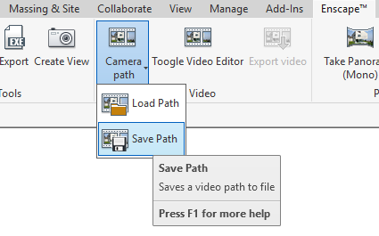
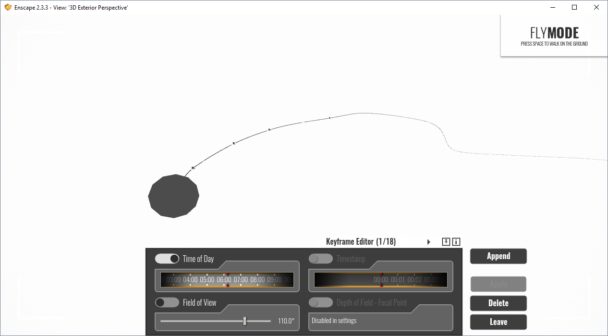
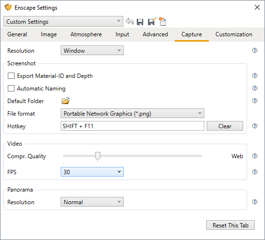
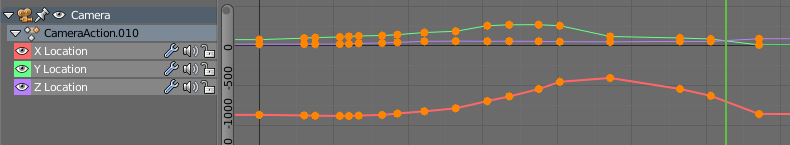

Enscape is a game-engine style rendering engine that has plugins available for Revit, SketchUp, Rhino, and ArchiCAD. It is a proprietary, simple program that allows you to view your models. Although it is very easy to use, it lacks the functionality and flexibility that other tools such as Blender's Eevee (extremely powerful, free, and open-source), Unity (offers free versions), and Unreal Engine allow.
One of the functions that Enscape has is the ability to set camera keyframes and export a short animation of your building model. This is standard keyframing and keyframe interpolation that is seen in all animation software, with the limitation that you can only keyframe the camera, the field of view, and the time of day. This means that should you want to create a more bespoke animation, it is simply not possible to do in Enscape and you should use other tools.
However, it is possible to composite over the underlying Enscape-animated footage. Stock standard 2D compositing is possible just like with any other footage, and so is camera / motion tracking, if you are keen to spend time tracking markers and solving the camera motion. However, Enscape does have an option to export out an XML file saving the camera positions. It is possible for us to recreate the camera movements in any other software.

This XML data looks a little like this for an animation that shows 5 keyframes. Take note how the frames are measured in seconds, not frames, and that the time of day is recorded in terms of "hour", and the field of view is recorded in radians.
<?xml version="1.0" ?>
<VideoPath version="1" easingInOut="1" shakyCam="0">
<Keyframes count="18">
<Keyframe order="0" hour="6.19048">
<Position x="-866.038" y="23.1767" z="-79.7907" />
<LookAt x="0.133988" y="0.0725552" z="-0.988323" />
</Keyframe>
<Keyframe order="1" timestampSeconds="10.0362">
<Position x="-874.087" y="22.7914" z="-98.4712" />
<LookAt x="0.051014" y="0.0422604" z="-0.997803" />
</Keyframe>
<Keyframe order="2" timestampSeconds="12.4903">
<Position x="-876.866" y="23.2531" z="-106.341" />
<LookAt x="0.396895" y="0.0325198" z="-0.917288" />
</Keyframe>
<Keyframe order="3" fieldOfViewRad="1.91964" timestampSeconds="50.9925">
<Position x="-693.204" y="59.4014" z="-255.678" />
<LookAt x="0.718453" y="-0.688584" z="0.0983752" />
</Keyframe>
<Keyframe order="4" hour="17.5333" timestampSeconds="111.771">
<Position x="-856.114" y="91.0984" z="-13.3383" />
<LookAt x="0.51913" y="-0.381081" z="-0.765037" />
</Keyframe>
</Keyframes>
</VideoPath>
The data is almost enough to recreate a camera path. First, we also need the field of view which is sometimes not explicit in the XML, but you can find it out from your settings. It is given in degrees in the UI.

Finally you will also need the camera resolution and the frames per second to convert seconds to frame. This can be found in the Enscape settings.

Those settings can be set in your camera object and rendering settings in your favourite 3D software. The next step is to actually translate the camera position and directions to your 3D software. Here, I demonstrate how to do it in Blender with a script.
There are actually three pieces of information required to explicitly define a camera location and rotation. First, you need the position coordinates, which we have, then we either need rotation degrees along each axis, which we don't have, or a camera direction and a camera up vector to help define an axis. Unfortunately, Enscape only gives us two: the camera position, and the camera direction vector. We don't know which way is up, so theoretically the camera could still rotate among an infinite number of possibilities and still be correct.
The good news is that it seems to follow the same system that Blender uses for the camera "track to" solver. So apart from your camera object in Blender named Camera, you will also need to create an empty, named Target which we will use to set as the "target" for the camera to point to. This is the python script that you can run inside Blender to import the XML data into your camera and target object. Be sure to delete any existing keyframes for the object or it might get confused. Also check that the FPS is correct (the default is 30).
import bpy, xml.etree.ElementTree
fps = 30
cam = bpy.data.objects['Camera']
target = bpy.data.objects['Target']
frame = 0
tree = xml.etree.ElementTree.parse('/path/to/Enscape_VideoPath.xml')
root = tree.getroot()
for keyframe in root[0]:
try:
frame = round(fps * float(keyframe.attrib['timestampSeconds']))
except:
frame = 0
print(frame)
cam.location = (float(keyframe[0].attrib['x']), -float(keyframe[0].attrib['z']), float(keyframe[0].attrib['y']))
target.location = (
float(keyframe[0].attrib['x']) + float(keyframe[1].attrib['x']),
- float(keyframe[0].attrib['z']) - float(keyframe[1].attrib['z']),
float(keyframe[0].attrib['y']) + float(keyframe[1].attrib['y'])
)
cam.keyframe_insert(data_path = 'location', frame = frame, index = -1)
target.keyframe_insert(data_path = 'location', frame = frame, index = -1)
Run the script and that's it! Your camera will now follow the path of the enscape camera. The coordinates are such that the project base point is set to be the origin. If you want, you can now export your project as an IFC, and view your IFC using Blender.
You can additionally check if the camera is correct by setting a video underlay in your Blender camera.
You will then quickly notice that your camera is correct on the keyframes, but the interpolation may not match exactly. By default, Enscape does an "EaseInOut" easing, but doesn't reveal exactly what interpolation it uses. I have found that it is roughly equivalent to a bezier curve without any handles. That is, you can go to the graph editor for the camera object, set your scale origins to be individual origins, then scale all keyframes down to 0.

You can now render and composite roughly camera tracked scenes on top of the Enscape footage.